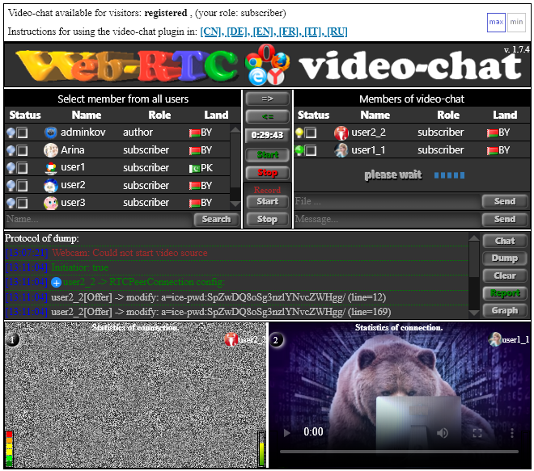
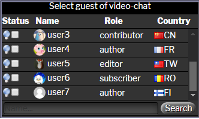
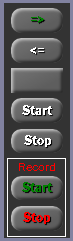
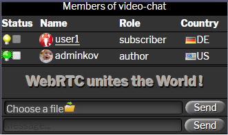
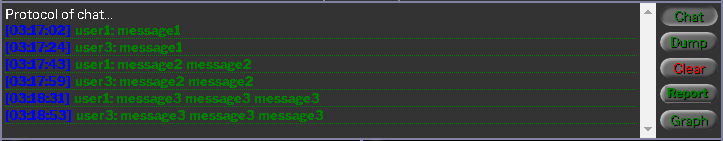
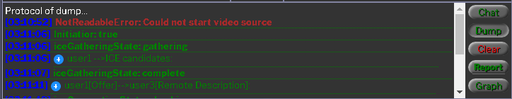
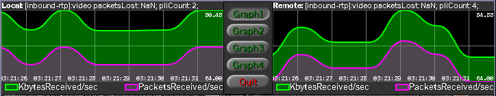
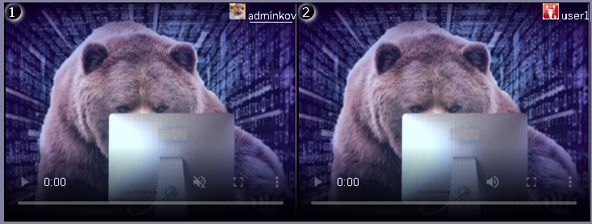
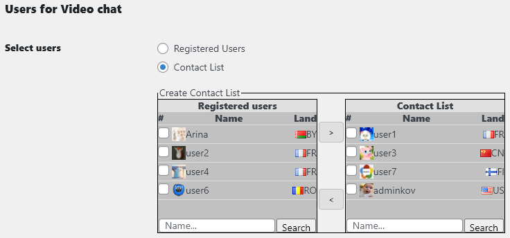
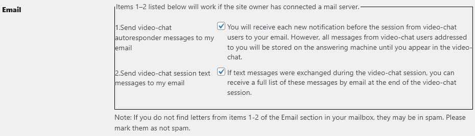

La vista generale del plug-in di chat video è presentata di seguito sotto forma di 7 aree grafiche:

1. Bandiera del plugin:
Al centro del banner c'è un pentagramma di icone del browser con cui funziona questo plug-in: Google Chrome, Fire Fox, Edge, Opera, Yandex.
2. Finestra dei visitatori del sito web registrati:

Questo è un elenco di tutti i visitatori registrati del sito.
Nel campo "Stato" - significa il colore della lampadina:
3. Finestra di gestione dei plug-in:

invitare qualcuno alla chat video
escludere l'interlocutore dalla video chat
conto alla rovescia
avviare la chat video
terminare la chat video
inizia a registrare la chat video
terminare la registrazione della chat video
Nota: dopo aver premuto il pulsante Start per registrare una chat video, l'interlocutore invitato riceverà un messaggio che la videochiamata è in fase di registrazione da parte del suo interlocutore.4. Finestra con un elenco di due partecipanti alla chat video:

Nella prima riga della tabella c'è il proprietario della stanza delle trattative, che invita l'interlocutore. Se fai clic sul suo nome, verrai indirizzato al suo profilo. Il pulsante "Choose file" serve per selezionare un file e trasferirlo all'interlocutore. Seleziona un file e fai clic sul pulsante Send. Apparirà una barra di avanzamento durante il trasferimento del file all'interlocutore. Campo "message": inserisci un messaggio lì e fai clic sul pulsante Send.
5. Finestra combinata per la visualizzazione dei messaggi correnti:

bottone "Chat" - la modalità di visualizzazione dei messaggi della segreteria telefonica, i partecipanti alla video chat.

bottone "Dump" - modalità per la visualizzazione del processo di creazione di una chat video.
bottone "Graph" - grafici che mostrano lo stato attuale della chat video.6,7 Due finestre per la visualizzazione dei flussi video e audio di due partecipanti alla chat video:

La prima finestra del flusso video è il proprietario della sala riunioni. Cliccando sul suo nome verrai indirizzato al suo Profilo. Il numero della finestra si trova nell'angolo in alto a sinistra di ogni finestra del flusso video. Cliccandoci sopra, puoi aumentare le dimensioni della finestra con la visualizzazione della modalità "immagine nell'immagine". Premendo di nuovo si riporterà la finestra nella sua posizione iniziale.
Quando si sposta il cursore del mouse sul numero della finestra, viene visualizzato un menu - passaggio alla modalità di visualizzazione dello schermo del computer o viceversa - accensione della webcam.
L'interfaccia il controllo è progettato in modo tale che i pulsanti con i colori delle iscrizioni bianche non saranno disponibili. La logica incorporata del comportamento del plug-in cambia il colore delle etichette dei pulsanti in verde o rosso e sarà disponibile se appropriato. Ciò consente di evitare situazioni di emergenza quando il plug-in è controllato in modo errato dall'utente. (Nota importante: l'amministratore del sito non partecipa alla video chat per motivi di sicurezza, al fine di evitare che il suo login venga mostrato a tutti gli altri visitatori del sito).
Un partecipante alla chat video può ingrandire la propria finestra o quella dell'interlocutore facendo clic sul cerchio (1) o (2) con la visualizzazione della modalità picture-in-picture. Una nuova pressione riporta la finestra nella sua posizione originale.
Quando passi il mouse sopra il cerchio (1), viene visualizzato un menu a discesa di due elementi: screen (o - webcam) e board ( oppure - nessuna board)
- screen/webcam - Cambia lo schermo dell'altro utente per condividere il tuo schermo o passare alla tua webcam.
- board/nessuna board- Attiva la modalità lavagna interattiva o fuori per disegnare.
8 Profilo utente registrato:

Un elemento - Utenti per chat video - è stato aggiunto al profilo utente. In caso di numero elevato di utenti registrati al sito, a questo punto per comodità, l'utente può creare la propria Lista Contatti per la video chat.

Un elemento è stato aggiunto al profilo utente - Email:
1. Invia i messaggi autorisponditore della chat video alla mia email
2. Invia messaggi di testo della sessione di chat video alla mia email
1. Vai alla pagina del sito sotto il tuo login, dove è impostato lo shortcode [webrtc2].
2. Nella finestra dei visitatori registrati del sito, seleziona la checkbox dell'utente con cui vuoi stabilire una connessione video e clicca sul pulsante => (invita l'interlocutore a una video chat).
2.1 Se la spia dell'utente selezionato è blu, significa che al momento non c'è nessun utente. In questo caso, puoi solo lasciargli un messaggio sull'autorisponditore inserendo un messaggio nel campo messagge e premendo il pulsante Send.
2.2 Se la spia dell'utente selezionato è gialla, significa che l'utente è presente e riceverà un tono di chiamata. Per scoprire chi sta chiamando, questo utente può spostare il cursore del mouse sulla luce verde nella finestra dei visitatori che hanno effettuato l'accesso.
2.3 Se l'utente che chiami accetta di rispondere alla tua chiamata, controllerà il tuo login e premerà il pulsante => (invita l'altra parte alla chat video). Dopo alcuni secondi, entrambi i partecipanti alla videochiamata riceveranno un segnale acustico Hello e il pulsante verde Start lampeggerà. Entrambi i partecipanti al collegamento video premono il pulsante Start e inizierà il processo di creazione di un collegamento video. (~ 10 secondi).
2.4 Se l'utente che hai chiamato non accetta di rispondere alla tua chiamata, dopo 60 secondi. la tua chiamata verrà automaticamente annullata.
3. Durante la videochiamata, puoi:
3.1 Scambia messaggi di testo.
3.2 Inviare file l'un l'altro.
3.3 Condividi il tuo schermo tra loro.
3.4 Usa un tavolo da disegno interattivo.